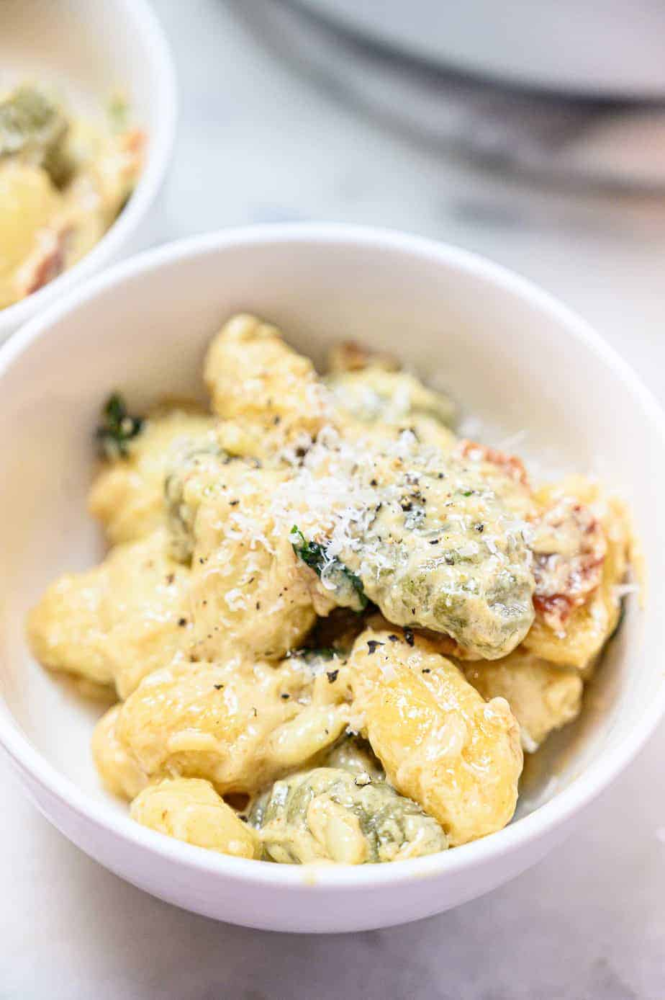

Creamy Truffle Gnocchi

Description
A delicious, creamy, and rich gnocchi recipe that can be eaten alone, or paired with a perfect protein of your choice.
Ingredients
- 17 ounces pre made gnocchi pasta
- 4 slices of bacon
- 3 cloves of garlic
- 1/4 cup fresh basic + 3 leaves for sprinkling at the end
- 1 tsp olive oil
- 1 tsp truffle balsamic
- salt and pepper to taste
- 1 cup heavy cream
- parmigiano reggiano cheese to taste
Steps:
- Start by chopping up 3 cloves of garlic and a 1/4 cup of basil. They can be roughly chopped. Set aside.
- Then, cube your bacon and fry it in a pan on medium-high heat until it’s crispy and cooked through. Set it aside on a paper towel to drain any excess grease.
- Add your herbs back into the pot and cook down until your garlic looks golden.
- Turn your heat down. Pour in your heavy cream, truffle balsamic and olive oil. stir and give the ingredients about 5 minutes to simmer together.
- Add in your gnocchi and cook according to the package (mine specified 2-3 minutes). You’ll know they fully cooked when you pierce them and they have an even color and texture. If in doubt 2-4 minutes is the rule of thumb.
- The cream sauce will start to thicken because of the starches from the pasta. You want that deliciousness!
- Turn off your heat, and top with bacon and a little bit of fresh basil. Grate in Parmigiano Reggiano to taste.
Back to home page